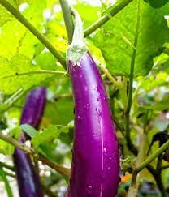

Terong
Terong tanaman berbuah yang termasuk dalam keluarga Solanaceae. Buah terong, sering berwarna ungu atau hijau, dikenal dengan rasa khasnya dan digunakan dalam berbagai masakan di berbagai budaya. Selain memberikan kontribusi pada rasa masakan, terong juga memiliki nilai gizi yang baik, mengandung vitamin C, vitamin K, vitamin B6, serat, dan antioksidan. Tanaman terong umumnya ditanam di kebun atau lahan pertanian dengan pemeliharaan kelembaban tanah, pemupukan yang tepat, dan pengendalian hama dan penyakit. Dengan berbagai varietas seperti terong ungu, terong hijau, dan terong kuning, terong menjadi bagian yang berharga dalam kuliner global, menyajikan variasi rasa dan kegunaan yang luas.Klasifikasi Terong
Tanaman terong termasuk dengan nama latin Solanum melongena. Berikut adalah klasifikasi cabai hingga tingkat genus:
- Kingdom: Plantae (Tumbuhan)
- Divisi: Magnoliophyta (Tumbuhan Berbunga)
- Kelas: Magnoliopsida (Dicotyledoneae, tumbuhan berkeping dua)
- Ordo: Solanales
- Familia: Solanaceae (familia teratai-terataian)
- Genus: Solanum (Genus yang mencakup berbagai tanaman termasuk terong)
Terong adalah anggota keluarga Solanaceae yang juga mencakup tanaman-tanaman seperti tomat, cabai, dan kentang. Dalam klasifikasi ini, terong termasuk dalam ordo Solanales yang mencakup berbagai tanaman berbunga. Kelasifikasi ini membantu dalam memahami hubungan evolusi dan karakteristik botani tanaman terong dalam konteks taksonomi tumbuhan.
Tips Perawatan
- Lokasi Penanaman: Pilih lokasi yang mendapat sinar matahari penuh dengan tanah yang subur dan memiliki drainase yang baik.
- Pengendalian Hama dan Penyakit: Pantau tanaman secara teratur untuk tanda-tanda hama seperti ulat atau kutu, dan terapkan metode pengendalian hama yang sesuai atau gunakan insektisida organik jika diperlukan.
- Pemupukan: Berikan pupuk organik atau pupuk yang kaya fosfor dan kalium untuk mendukung pertumbuhan dan pembentukan buah.
- Pemeliharaan Lingkungan: Lindungi tanaman terong dari angin kencang yang dapat merusak batang dan daun, serta pastikan area sekitar tanaman bersih dari gulma yang dapat bersaing dengan nutrisi dan air.
- Dukungan Tanaman: Pasang dukungan atau tiang penyangga untuk tanaman terong yang tumbuh tinggi agar dapat menopang batang dan buah.